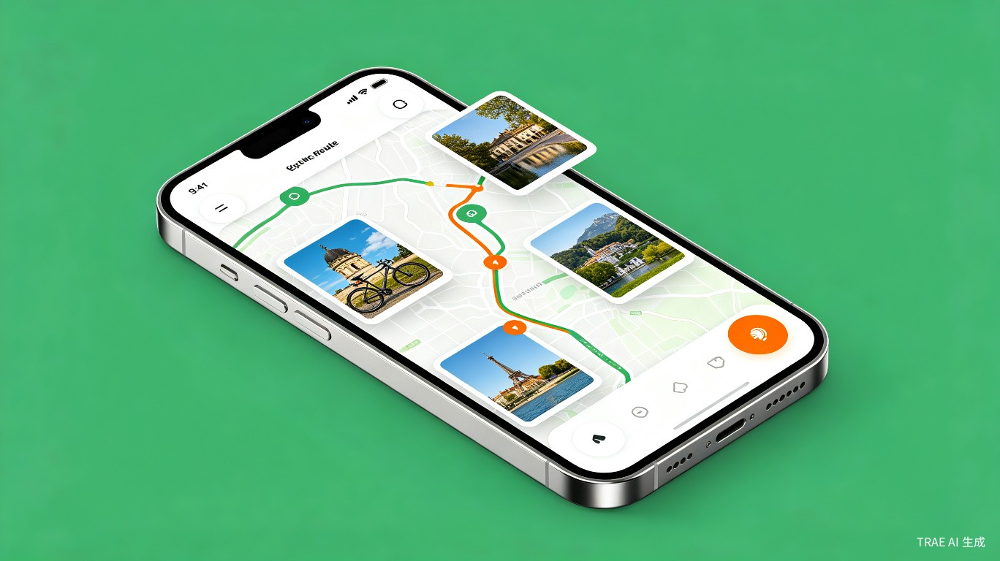

1
创意名称 + 创意介绍
想解决什么问题
- 路线不明确：骑行前需花大量时间在地图软件上反复搜索、拼接路线，效率低且容易遗漏好风景。
- 骑行过程枯燥：独自骑行时缺乏讲解和互动，容易感到单调，难以坚持。
- 不确定性导致焦虑：对沿途补给点、难度、天气等信息不了解，出发前心里没底。
为什么会想到做这个
作为骑行爱好者，我在规划周末骑行时经常遇到以上困扰。希望能有一个工具，像一位"骑行向导"一样，帮我轻松规划、全程陪伴。
大概是什么产品
一款微信小程序。输入起点、终点或偏好（如距离、难度、风景类型），AI 自动生成个性化路线，并实时提供沿途介绍、打卡点提示、安全提醒等。

产品界面概念图 — 地图导航 + 沿途风景卡片 + 语音讲解
2
目标用户及痛点
面向哪些用户
城市骑行爱好者，包括通勤者、周末休闲骑手、骑行入门者。
在什么场景下使用
骑行前
规划路线、查看风景点
→
骑行中
导航 + 语音讲解
→
骑行后
记录感悟、分享路线
当前痛点
- 找路难：现有地图软件骑行路线推荐少，且不考虑骑行体验（如风景、坡度）。
- 独自骑行枯燥：缺少语音讲解和互动，骑行变成单纯的体力消耗。
3
价值与意义
效率提升
将原本需要 30 分钟以上 的路线规划时间缩短至 1 分钟，让骑行者更专注于骑行本身。
社会价值
鼓励绿色出行，通过趣味化骑行体验提升大众运动意愿，促进健康生活方式。
商业价值可后续通过本地商户合作、骑行装备推荐等方式拓展，但初期重点在于产品体验和社会价值。
4
核心亮点与差异化
简洁即优势
砍掉社交、数据统计等冗余功能，聚焦故事性和个性化记录，让产品更轻量、更专注。
AI 全程陪伴
不只是导航工具，更是你的骑行向导——沿途景点讲解、历史故事、安全提醒，让骑行不再孤单。
盲盒解锁机制
骑行后解锁随机故事、路线徽章等隐藏内容，增加用户粘性和复骑动力。